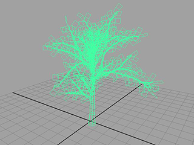
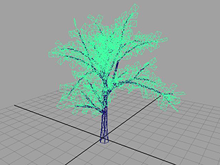
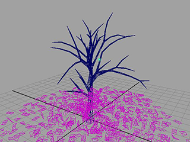
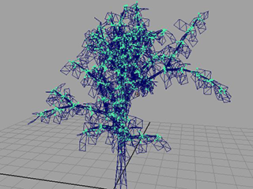
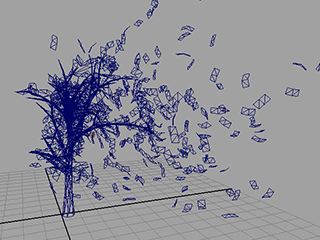

本示例将介绍如何使用 nCloth 创建有树叶飘落的树。树叶对许多种力（如风、重力）和显示特性（如弯曲）都会作出反应。
创建树
首先使用 Maya 的 Paint Effects 工具创建树，然后将树叶变换为 nCloth 对象。
使用 Paint Effects 创建树
- 在 Maya 工具架上选择“Paint Effects”选项卡。
- 选择“简单树”(Simple Tree)笔刷，然后在场景中绘制一棵树。

可以使用“缩放工具”(Scale Tool)使树变大，但本例中的步骤是针对默认大小而设计的。
- 选择“修改 > 转化 > Paint Effects 到多边形”(Modify > Convert > Paint Effects to Polygons)。（有关选项的说明，请参见 Paint Effects 到多边形。）
- 更改为选择工具(Select Tool)，然后选择树叶。
- 在 FX 菜单集 (F5) 中，选择“nCloth > 创建 nCloth”(nCloth > Create nCloth)。
Maya 将创建名为 nucleus1 的解算器，并将树叶添加到该解算器。
 - 在“属性编辑器”(Attribute Editor)中，选择“nucleus1”选项卡。
- 在“nucleus1”选项卡的“地平面”(Ground Plane)部分中，启用“使用平面”(Use Plane)。
- 在“解算器属性”(Solver Attributes)部分中，将“最大碰撞迭代次数”(Max Collision Iterations) 设置为 1。
- 选择“nClothShape1”选项卡，然后在“碰撞”(Collisions)部分中按如下所述调整属性：
- 自碰撞(Self Collide)：禁用(Off)
- 摩擦力(Friction)：1
- 将播放范围的结束时间设定为 50。
- 播放模拟。
树叶从树上垂直落到地面。

添加树叶的弯曲、升力和阻力，可以使该效果更加逼真。
设置树叶
使树叶卷曲
- 选择树叶。
- 在属性编辑器(Attribute Editor)中，选择“nClothShape1”选项卡。
- 在“动力学特性”(Dynamic Properties)部分中，按如下所述设置属性：
- 拉伸阻力(Stretch Resistance)：10
- 压缩阻力(Compression Resistance)：10
- 弯曲阻力(Bend Resistance)：15
为树叶提供更加逼真的物理效果
- 在属性编辑器(Attribute Editor)中，选择“nClothShape1”选项卡。
- 在“动力学特性”(Dynamic Properties)部分中，按如下所述调整属性：
- 升力(Lift)：0.08
- 切向阻力(Tangential Drag)：0
- 播放模拟。
现在，树叶会在坠落和触到地面时发生弯曲。树叶也不会垂直落下，而是有一点随风飘动到地面上的效果。可以进一步调整这些设置以细化效果。
约束树叶
与模拟不同，现实生活中树的叶子几乎不会同时掉落。若要模拟真实的树，必须将树叶约束到分支，直到足以移除树叶的力对树产生影响。
将树叶约束到树
- 按住 Shift 键的同时选择树叶和树。
- 在 FX 菜单集 (F5) 中，选择“nConstraint > 组件到组件”(nConstraint > Component to Component)。
- 在属性编辑器(Attribute Editor)中，选择“DynamicConstraintShape1”选项卡，然后在“动态约束属性”(Dynamic Constraint Attributes) 部分中，按如下所述调整属性：
- 连接方法(Connection Method)：在最大距离内(Within Max Distance)
- 最大距离(Max Distance)：0.1
- 粘合强度(Glue Strength)：0.04
注：
如果对树进行了缩放，则必须更改这些值以便获得所需的效果。树的缩放程度越大，这些值就必须越大。
- 播放模拟。
树叶仍然附着在树上。

通过在步骤 4 中调整“粘合强度”(Glue Strength)属性，可以修改为使树叶从树上掉落而必须应用的力的强度。可以使用多种方法（例如，风或湍流）使树叶脱落。本示例中使用的是风。
将树叶从树上吹落
使用风将树叶从树上吹落
- 选择树叶。
- 在属性编辑器(Attribute Editor)中，选择“nucleus1”。
- 在“重力和风”(Gravity and Wind)部分中，将“风速”(Wind Speed)设置为 40。
- 播放模拟。
树叶从树上吹落。
注：如果要在场景视图中隐藏约束，请在“Hypergraph: 连接”(Hypergraph: Connections)窗口中的“dynamicConstraintShape1”节点上单击鼠标右键，然后选择“隐藏”(Hide)。这样既可使树的显示更为清晰，同时还能提高播放的速度。